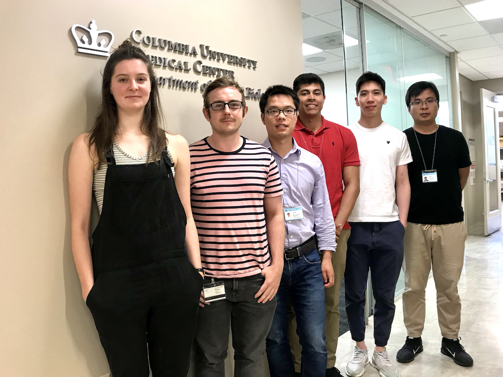
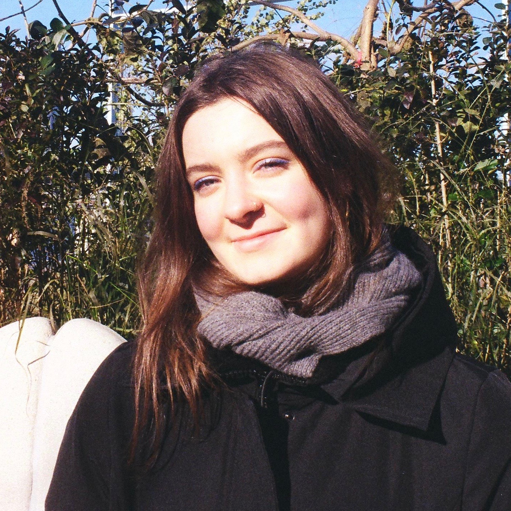

We study mechanisms of gene regulation, focusing on mRNAs in mammalian systems. Our current efforts include: 1) noncoding translation in health and disease; 2) functions and mechanisms of mRNA structures.

We characterize CRISPR technologies using unbiased genomic assays. We are also exploring the therapeutic potential of CRISPR/Cas13-based mRNA targeting therapeutics for human diseases.

We develop new quantitative models, machine learning approaches, and computational tools to understand RNA biology and improve CRISPR guide RNA design.
1) A web server called kpLogo for position-specific short motif analysis.
See
Wu & Bartel 2017 Nucleic Acids Research
2) Network-based global prediction of human disease genes.
See
Wu et al. 2008 Molecular Systems Biology
3) Network alignment-based identification of disease families and associated gene modules.
See
Wu et al. 2009 Bioinformatics
2018
Cheng Zhang, Silvana Konermann, Nicholas J. Brideau, Peter Lotfy, Xuebing Wu, Scott J. Novick, Timothy Strutzenberg, Patrick R. Griffin, Patrick D. Hsu, Dmitry Lyumkis
Structural basis for the RNA-guided ribonuclease activity of CRISPR-Cas13d.
Cell, 2018, 175:212-223
Josh Tycko, Luis A Barrera, Nicholas Huston, Ari E Friedland, Xuebing Wu, Jonathan S Gootenberg, Omar O Abudayyeh, Vic E Myer, Christopher J Wilson, Patrick D Hsu
Pairwise library screen systematically interrogates Staphylococcus aureus Cas9 specificity in human cells.
Nature Communications, 2018, 9:2962
Wei Jiang*, Yuehua Wei*, Yong Long*, Arthur Owen, Bingying Wang, Xuebing Wu, Shuo Luo, Yongjun Dang, Dengke K. Ma
A genetic program mediates cold-warming response and promotes stress-induced phenoptosis in C. elegans
eLife, 2018, 7:e35037
X Shawn Liu, Hao Wu, Marine Krzisch, Xuebing Wu, John Graef, Julien Muffat, Denes Hnisz, Charles H. Li, Bingbing Yuan, Chuanyun Xu, Yun Li, Dan Vershkov, Angela Cacace, Richard A. Young,
Rudolf Jaenisch
Rescue of fragile X syndrome neurons by DNA methylation editing of the FMR1 gene
Cell, 2018, 172:979–992
Anthony C. Chiu*, Hiroshi I. Suzuki*, Xuebing Wu, Dig B. Mahat, Andrea J. Kriz, Phillip A. Sharp
Transcriptional Pause Sites Delineate Stable Nucleosome-Associated Premature Polyadenylation Suppressed by U1 snRNP
Molecular Cell, 2018, 69:648–663
2017
Xuebing Wu, David P. Bartel
Widespread influence of 3′-end structures on mammalian mRNA processing and stability
Cell, 2017, 169: 905–917
Xuebing Wu^, David P. Bartel^ (^co-corresponding author)
kpLogo: positional k-mer analysis reveals hidden specificity in biological sequences
Nucleic Acids Research, gkx323
http://kplogo.wi.mit.edu
2016
X Shawn Liu*, Hao Wu*, Xiong Ji, Yonatan Stelzer, Xuebing Wu, Szymon Czauderna, Jian Shu, Chikdu S. Shivalila, Daniel Dadon, Richard A. Young, Rudolf Jaenisch
Editing DNA methylation in the mammalian genome
Cell, 2016, 167:233-247
Journal highlight: Nature
Xiaochang Zhang, Ming Hui Chen, Xuebing Wu, Andrew Kodani, Jean Fan, Ryan Doan, Manabu Ozawa, Jacqueline Ma, Nobuaki Yoshida, Jeremy F Reiter, Douglas L. Black, Peter V Kharchenko, Phillip A. Sharp, Christopher A. Walsh
Cell type-specific alternative splicing governs cell fate in the developing cerebral cortex
Cell, 2016, 166:1147-1162
2015
F. Ann Ran*, Le Cong*, Winston X. Yan*, David A. Scott, Jonathan S. Gootenberg, Andrea J. Kriz, Bernd Zetsche, Ophir Shalem, Xuebing Wu, Kira S. Makarova, Eugene V. Koonin, Phillip A. Sharp, Feng Zhang
In vivo genome editing using Staphylococcus aureus Cas9
Nature, 2015, 520:186-191
2014
Xuebing Wu, Andrea J. Kriz, Phillip A. Sharp
Target specificity of the CRISPR-Cas9 system
Quantitative Biology, 2014, 2:59-70
Xuebing Wu, David A. Scott, Andrea J. Kriz, Anthony C. Chiu, Patrick D. Hsu, Daniel B.
Dadon, Albert W. Cheng, Alexandro E. Trevino, Silvana Konermann, Sidi Chen, Rudolf Jaenisch, Feng Zhang, Phillip A. Sharp
Genome-wide binding of the CRISPR endonuclease Cas9 in mammalian cells
Nature Biotechnology, 2014, 32:670-676
Sidi Chen, Yuan Xue, Xuebing Wu, Le Cong, Arjun Bhutkar, Eric Bell, Feng Zhang, Robert Langer, Phillip A. Sharp
Global microRNA depletion suppresses tumor angiogenesis
Genes & Development, 2014, 28:1054-1067
2013
Xuebing Wu, Phillip A. Sharp
Divergent transcription: a driving force for new gene origination?
Cell, 2013, 155:990-996
"Leading Edge Featured Article" in Cell
Albert E. Almada*, Xuebing Wu*, Andrea J. Kriz, Christopher B. Burge, Phillip A. Sharp (*equal contribution)
Promoter directionality is controlled by U1 snRNP and polyadenylation signals
Nature, 2013, 499:360–363

Journal highlight: Nature Reviews Genetics | Cell Research | Nature Structural Molecular Biology
Media: MIT News | ScienceDaily | The Christian Science Monitor | Genetic Engineering & Technology News
Le Cong, F Ann Ran, David Cox, Shuailiang Lin, Robert Barretto, Naomi Habib, Patrick D Hsu, Xuebing Wu, Wenyan Jiang, Luciano A Marraffini, Feng Zhang
Multiplex genome engineering using CRISPR/Cas systems
Science, 2013, 339 (6121):819-823.
highlighted in Science | Nature Reviews Genetics | Nature Methods
Patrick D. Hsu, David A. Scott, Joshua A. Weinstein, F. Ann Ran, Silvana Konermann, Vineeta Agarwala, Yinqing Li, Eli J. Fine, Xuebing Wu, Ophir Shalem, Thomas J. Cradick, Luciano A. Marraffini, Gang Bao, and Feng Zhang
DNA Targeting Specificity of the RNA-guided Cas9 Nuclease
Nature Biotechnology, 2013, 31:827-832
Anna Lyubimova, Shalev Itzkovitz, Jan Philipp Junker, Zi Peng Fan, Xuebing Wu, Alexander van Oudenaarden
Single-molecule mRNA detection and counting in mammalian tissue
Nature Protocols, 2013, 8:1743–1758 (download software)
Yong Chen, Xuebing Wu, Rui Jiang
Integrating human omics data to prioritize candidate genes
BMC Medical Genomics, 2013, 6:57
2010
Xuebing Wu, Shao Li
Cancer gene prediction using a network approach
Chapter 11 in: Cancer Systems Biology (Ed. Edwin Wang). Series: Chapman & Hall/CRC Mathematical & Computational Biology, USA: CRC Press 2010. [Amazon]
2009
Xuebing Wu, Qifang Liu, Rui Jiang
Align human interactome with phenome to identify causative genes and networks underlying disease families
Bioinformatics, 2009, 25 (1): 98-104 [Data]
Wanwan Tang, Xuebing Wu, Rui Jiang, Yanda Li
Epistatic module detection for case-control studies: A Bayesian model with a Gibbs sampling strategy
PLoS Genetics, 2009, (5):e1000464
Rui Jiang, Wanwan Tang, Xuebing Wu, Wenhui Fu
A random forest approach to the detection of epistatic interactions in case-control studies
BMC Bioinformatics, 2009, 10 (Suppl 1):S65
2008
Xuebing Wu, Rui Jiang, Michael Q. Zhang, Shao Li
Network-based global inference of human disease genes
Molecular Systems Biology, 2008, 4:189.
| 2019/07/01 |  |
Xuebing Wu
Postdoc, David Bartel lab, Whitehead Institute |
|
Ziheng (Calvin) ChenMaster of Science Program, Department of Biomedical Engineering, Columbia University zc2418@columbia.edu
|
|
 |
Alexis AparicioTechnician aoa2145@columbia.edu
|
 |
Michael MurphyPostdoc Research Scientist mrm2267@cumc.columbia.edu
|
|  | Ellen AltUndergraduate student (Cellular and Molecular Biology) era2141@barnard.edu
|
Ziqiang WangPostdoc Research Scientist email: zw2651@cumc.columbia.edu
|
|
 |
|

|
AlignPI is the abbreviation of "Align Phenome & Interactome." We have performed the first alignment of human phenome and interactome network, and identified 39 bi-modules and made predictions of candidate genes for 70 diseases. Bi-module consists of two inter-connected modules: a network of diseases and a network of genes.
Links: The AlignPI website provides a search interface for all identified bi-modules and candidate gene predictions, and corresponding functional enrichment analysis. Citation: Wu X, Liu Q, Jiang R (2009) Align human interactome with phenome to identify causative genes and networks underlying disease families. Bioinformatics, 25 (1): 98-104 |
June 1, 2019 Ziqiang Wang joined the lab as a postdoc research scientist. Welcome Ziqiang!
May 28, 2019 Ellen Alt joined the lab as a summer research student. Welcome Ellen!
Mar 1, 2019 Michael Murphy joined the lab as a staff associate. Welcome Michael!
Feb 19, 2019 Alexis Aparicio joined the lab as our first Technician. Welcome Alex!
Jan, 2019 Ziheng (Calvin) Chen, a graduate student in the BME Master of Science program joined the lab. Welcome Calvin!
Dec 7, 2018 Xuebing won the Scaringe Award from the RNA Society
Nov 1, 2018 Lab officially starts!
We are seeking passionate researchers of all stages (postdocs, graduate students, undergraduates, and research associates) to join our team. Please email me (xw2629@columbia.edu) directly if you are interested in joining our team.
Columbia University undergraduate students: We welcome passionate and creative students to work in the lab. Dr. Xuebing Wu is also a mentor of the Summer Undergraduate Research Fellowship (SURF) program.